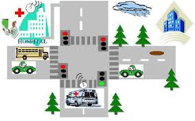
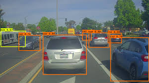
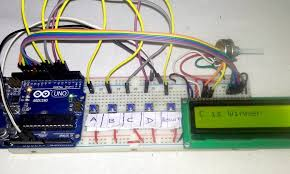
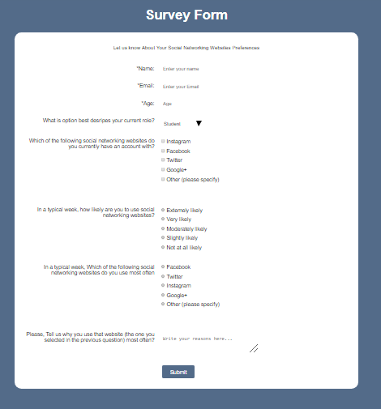

Hi, I'm Darshan
I'm a Front-End Web Developer
About Me
I'm a hard work Electronics Engineer with a great passion for programming in web development. I am a creative front end developer who like making beautiful and innovative things through coding.
Projects

Ambulance Clearance
This is a project based on self-Adaptive traffic light control for ambulance clearance
Smart Home Automation System
This is a home automation project that is deployed using IoT and embedded systems
Line Follower Bot
This is a line follower robot that automatically turns its direction in the direction of black line

Vehicle Detection System
This is an object detection based project that draws bounding boxes over vehicles when it is detected

Simple Voting Machine
An electronic system that calculates votes automatically and decides the winner by allowing each person to vote only once based on fingerprint
